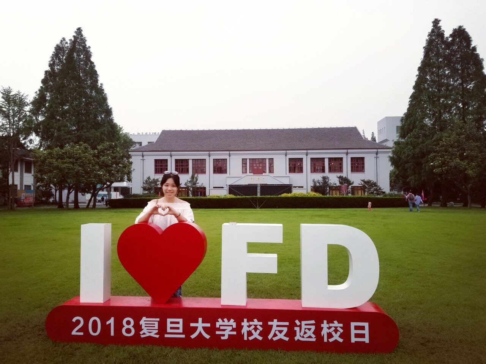

My Life in Fudan University
Xiaoran Peng(Stella Peng) graduated from Fudan University and her major is physics.
At that time, her research interest is about super-conductor.And her advisor is Lei Shu.
Xiaoran Peng(Stella Peng) graduated from Fudan University and her major is physics.
At that time, her research interest is about super-conductor.And her advisor is Lei Shu.